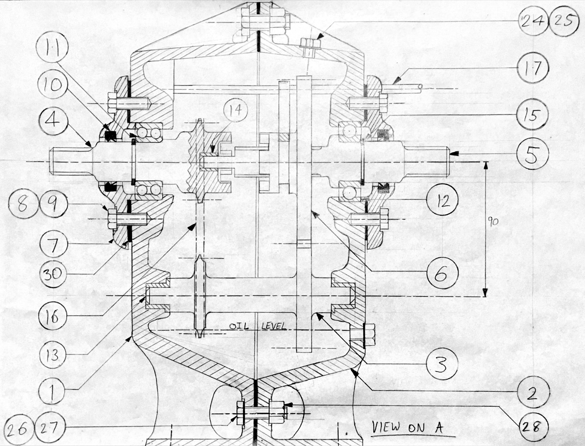
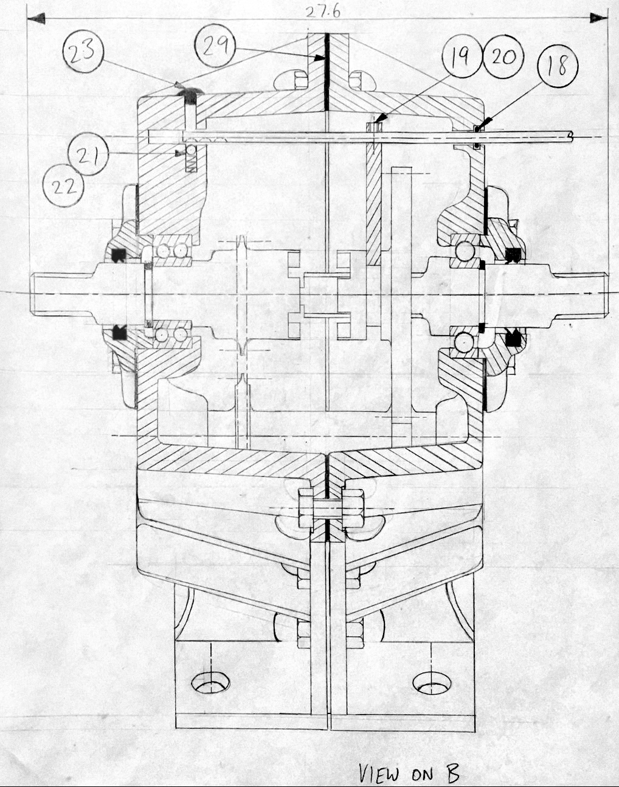
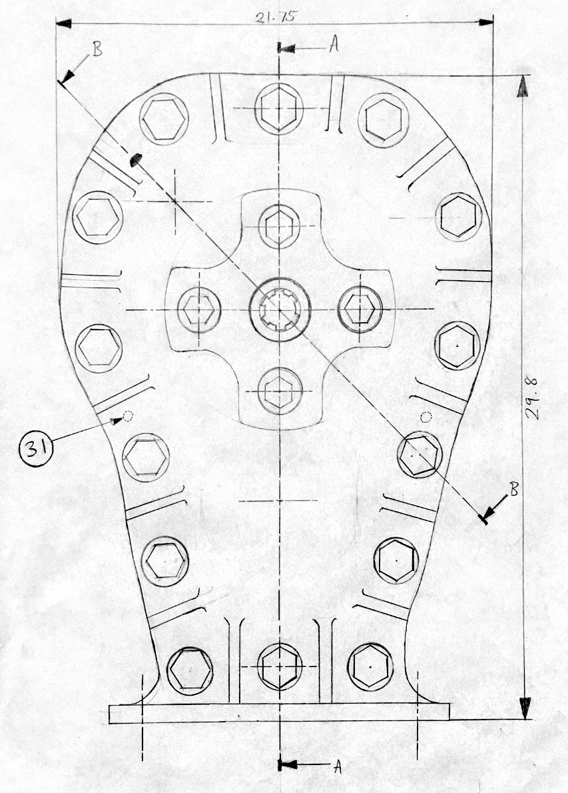
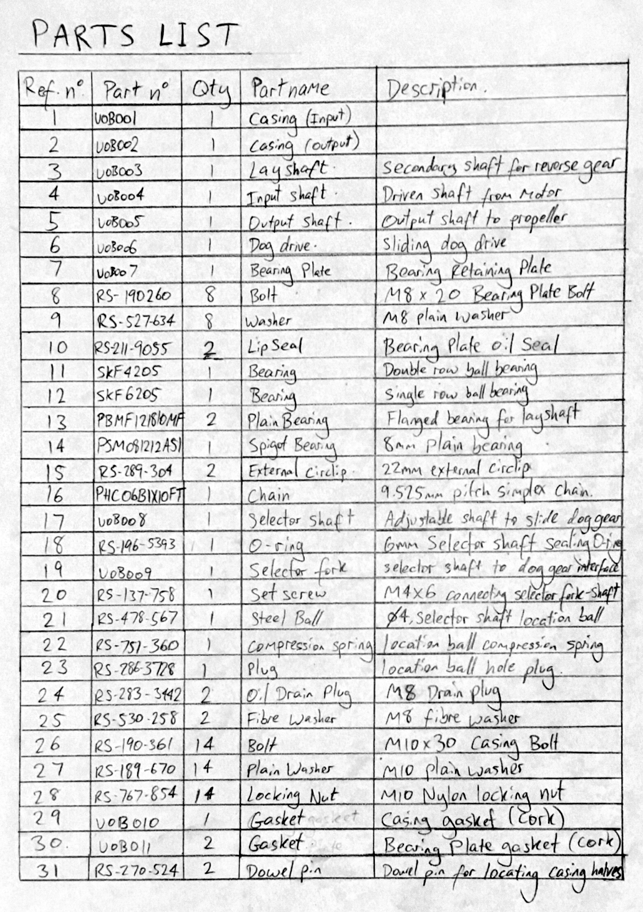
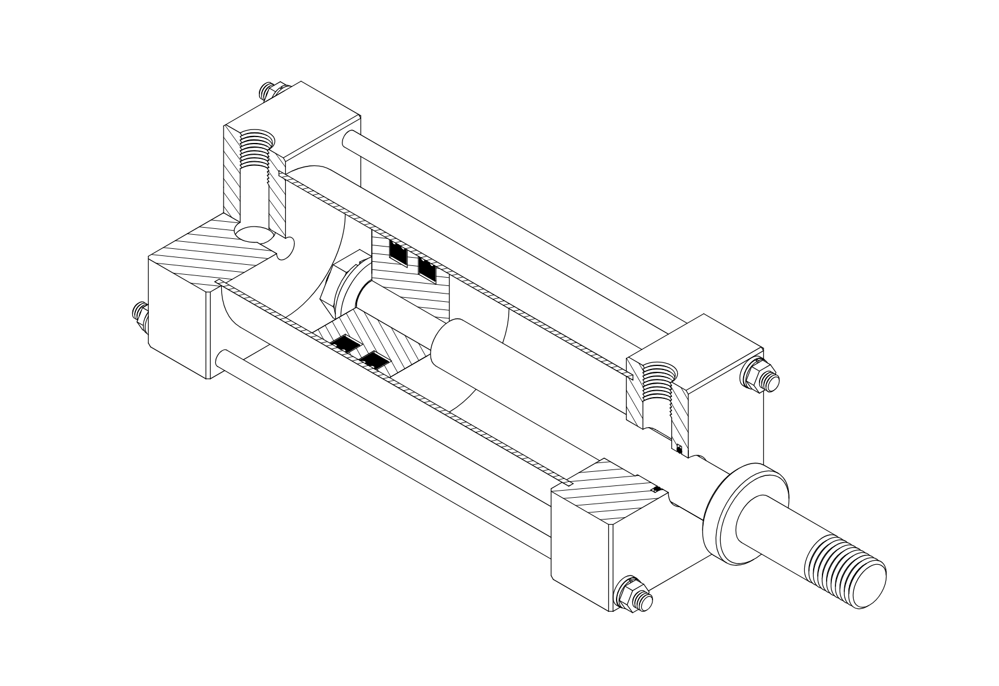
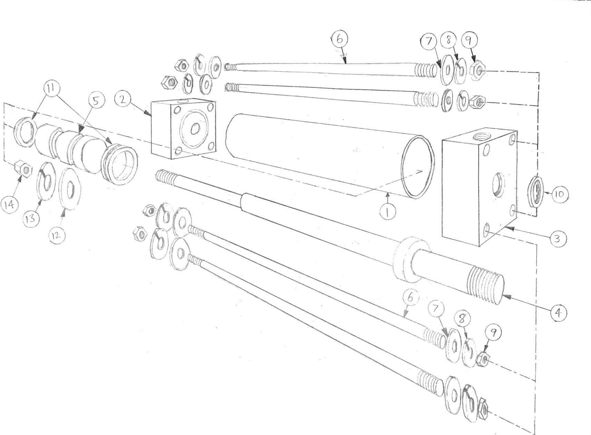

MAY 2021
Detailed assembly hand-drawings of a gearbox based on a set of constraints and requirements. Including gear selector fork, forward (dog-drive), neutral and reverse (chain driven layshaft), oil fill plugs, and more. The assignment required a side-view and two cross-section views to capture the internal mechanisms in detail.




ARTEFACT STUDY
Study of a pneumatic actuator. Detailed isometric cutaway done in AutoCad (no 3D modelling) and exploded perspective hand-sketch.

